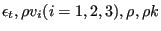
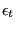
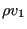

In subroutine initialcfdfem.f the following fields are calculated:
- For each node i in the fluid, the distance from this node to the nearest
solid surface node. This distance is stored in field yy(i) and the
corresponding nearest surface node in jyy(i). They are needed for
the turbulence model.
- For each solid surface node, the distance to the nearest in-flow
node. It is stored in field xsolidsurf. This quantity is also needed for the
turbulence model.
- For each node i the adjacent element height dh(i). This is the minimum of the
height of all elements to which the node belongs. The height of an element j
is its volume divided by the largest facial area times a factor (e.g. 1 for
a hexahedral element and 3 tetrahedral element). This height is stored in
field dhel(j) and is used to determine dh(i). From dh(i) the
local time increment
 is calculated.
is calculated.
- For shallow water calculations: the depth in all fluid nodes (this is the
element
length in the direction of the gravity vector).
- Initial conditions for the turbulence parameters
 and
and  .
.
- The value of the conservative variables in all fluid nodes starting
from the physical variables. The conservative variables, stored in field
vcon(1..nk,0..mi(2)), are

and
 . For efficiency first
. For efficiency first

is stored for all nodes,
then 
and so on..., since they are solved for separately (so a
single pointer suffices to switch between the fields). The physical
variables are the static temperature  , the velocity components
, the velocity components  ,
the static pressue
,
the static pressue  and the turbulence parameters and . They
are stored in field vold(0..mi(2),1..nk) in the way conventional to
structural calculations, i.e. first all parameters for node 1, then for node 2....
and the turbulence parameters and . They
are stored in field vold(0..mi(2),1..nk) in the way conventional to
structural calculations, i.e. first all parameters for node 1, then for node 2....
The fields calculated in initialcfdfem frequently contain distances between
nodes, which may have changed since the last call to compfluid.